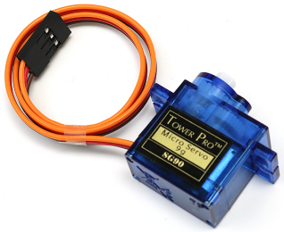
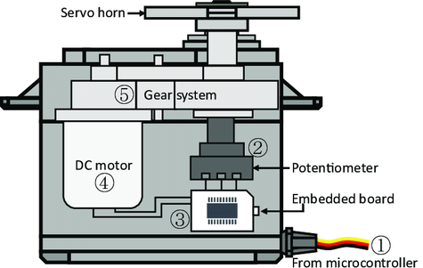

Note
Hello, welcome to the SunFounder Raspberry Pi & Arduino & ESP32 Enthusiasts Community on Facebook! Dive deeper into Raspberry Pi, Arduino, and ESP32 with fellow enthusiasts.
Why Join?
Expert Support: Solve post-sale issues and technical challenges with help from our community and team.
Learn & Share: Exchange tips and tutorials to enhance your skills.
Exclusive Previews: Get early access to new product announcements and sneak peeks.
Special Discounts: Enjoy exclusive discounts on our newest products.
Festive Promotions and Giveaways: Take part in giveaways and holiday promotions.
👉 Ready to explore and create with us? Click [here] and join today!
Servo Motor (SG90)


Introduction
Servo motors are devices that can rotate to a specific angle or position. They can be used to move robotic arms, steering wheels, camera gimbals, etc. Servo motors have three wires: power, ground and signal. The power wire is usually red and should be connected to the 5V pin on the Arduino board. The ground wire is usually black or brown and should be connected to a ground pin on the board. The signal wire is usually yellow or orange and should be connected to a PWM pin on the board.
Principle
A servo is generally composed of the following parts: case, shaft, gear system, potentiometer, DC motor, and embedded board.
It works like this:
The microcontroller sends out PWM signals to the servo, and then the embedded board in the servo receives the signals through the signal pin and controls the motor inside to turn.
As a result, the motor drives the gear system and then motivates the shaft after deceleration.
The shaft and potentiometer of the servo are connected together.
When the shaft rotates, it drives the potentiometer, so the potentiometer outputs a voltage signal to the embedded board.
Then the board determines the direction and speed of rotation based on the current position, so it can stop exactly at the right position as defined and hold there.


Work Pulse
The angle is determined by the duration of a pulse that is applied to the control wire. This is called Pulse width Modulation.
The servo expects to see a pulse every 20 ms. The length of the pulse will determine how far the servo turns.
For example, a 1.5ms pulse will make the servo turn to the 90 degree position (neutral position).
When a pulse is sent to a servo that is less than 1.5 ms, the servo rotates to a position and holds its output shaft some number of degrees counterclockwise from the neutral point.
When the pulse is wider than 1.5 ms the opposite occurs.
The minimal width and the maximum width of pulse that will command the servo to turn to a valid position are functions of each servo.
Generally the pulse will be about 0.5 ms ~ 2.5 ms wide.

Usage
Hardware components
Arduino Uno R4 or R3 board * 1
Servo Motor * 1
Jumper Wires
Circuit Assembly

Code
Code explanation
Here, the
Servolibrary is included which allows for easy control of the servo motor. The pin connected to the servo and the initial angle of the servo are also defined.#include <Servo.h> const int servoPin = 9; // Define the servo pin int angle = 0; // Initialize the angle variable to 0 degrees Servo servo; // Create a servo object
The
setup()function runs once when the Arduino starts. The servo is attached to the defined pin using theattach()function.void setup() { servo.attach(servoPin); }
The main loop has two
forloops. The first loop increases the angle from 0 to 180 degrees, and the second loop decreases the angle from 180 to 0 degrees. Theservo.write(angle)command sets the servo to the specified angle. Thedelay(15)causes the servo to wait for 15 milliseconds before moving to the next angle, controlling the speed of the scanning movement.void loop() { // scan from 0 to 180 degrees for (angle = 0; angle < 180; angle++) { servo.write(angle); delay(15); } // now scan back from 180 to 0 degrees for (angle = 180; angle > 0; angle--) { servo.write(angle); delay(15); } }
Additional Ideas
Control the servo’s motion using a potentiometer. The rotation of the potentiometer could be used to directly control the angle of the servo.